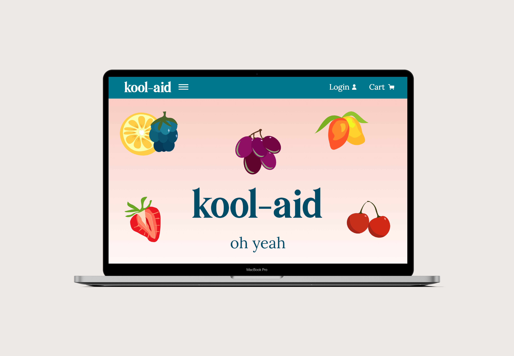
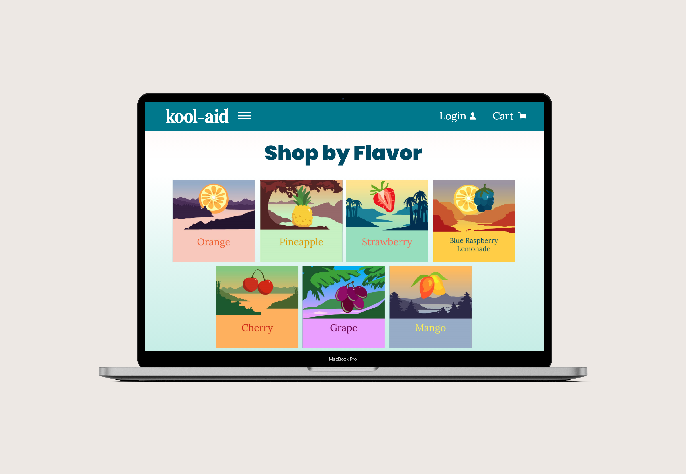
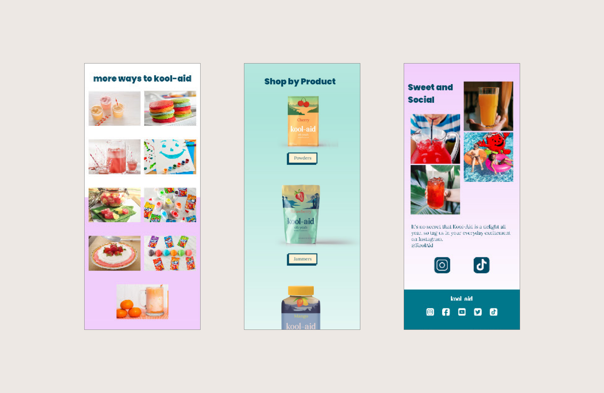
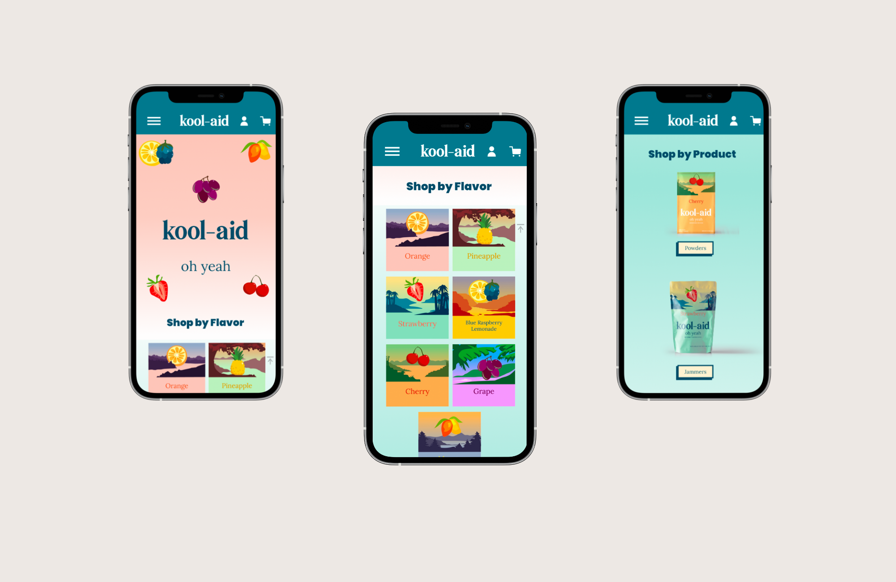
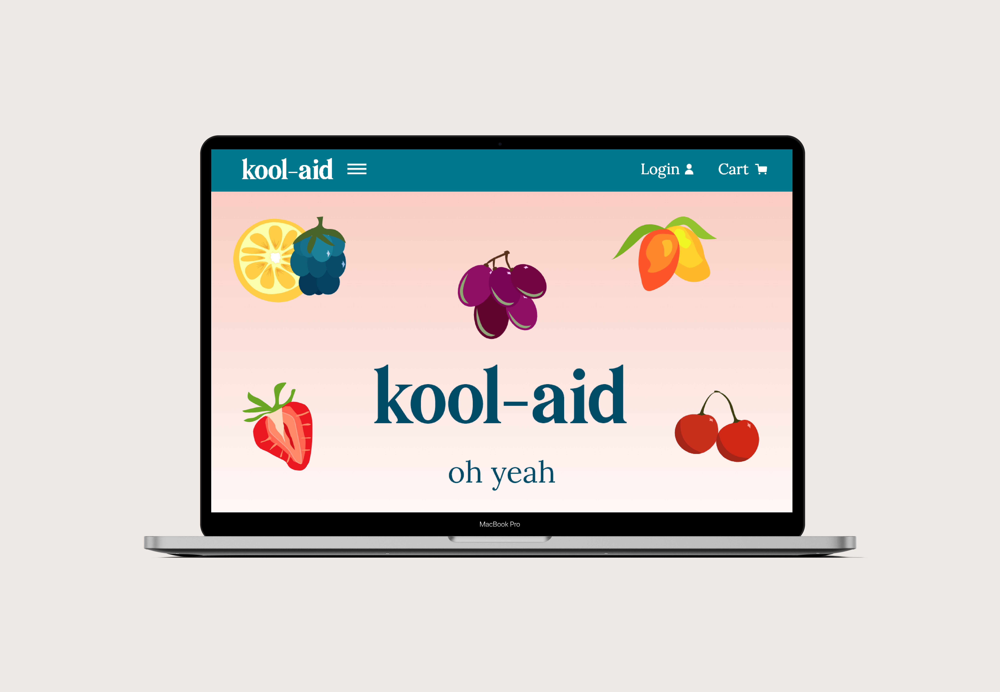
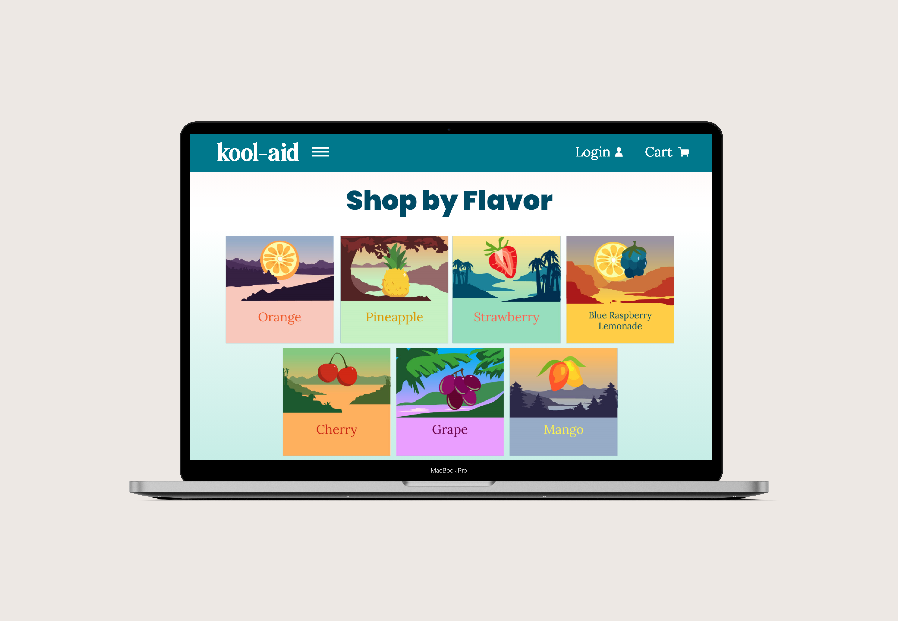
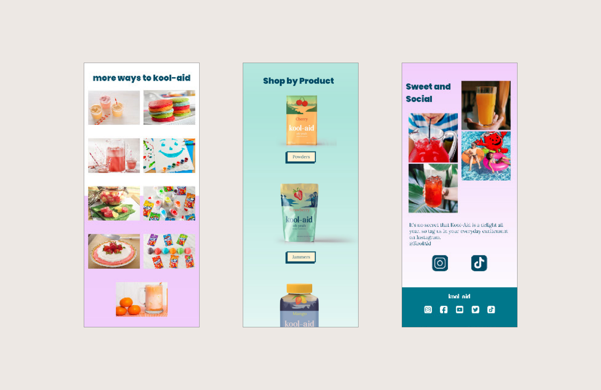
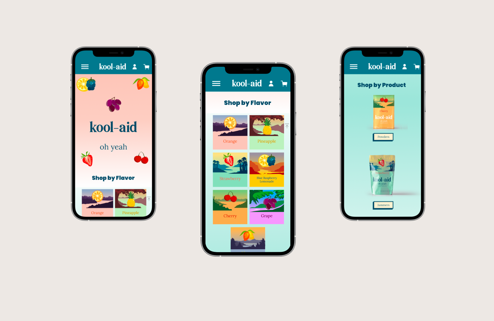

ux design
kool-aid redesign
adobe xd
The goal of designing a single page website that would utilize basic accesibility standards and update the current appearance turned out to be an instant favorite. All apperances could be altered so I opted for a complete facelift and chose to rebrand the companies physical packaging, logo, and all visual material in addition to colmpleting this single page site.
 






